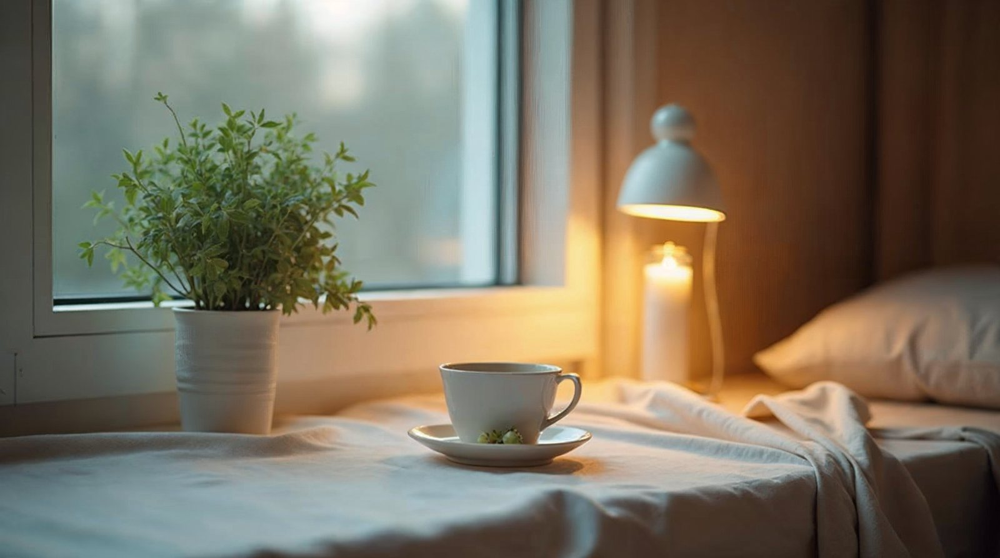

이종호 한의사 감수좋은꿈참사랑한의원 대표원장 (한의사 면허번호 19769)발행 2026-11-25 · 수정 2026-11-26
이 글의 차례
- 왜 이런 불편이 생길 수 있나요
- 계절 따라 가라앉는 기분은 어떻게 알아볼까요
- 하루 중 햇빛은 언제, 어떻게 만날까요
- 왜 겨울 아침에는 일어나기가 더 힘들까요
- 연말 일정은 이렇게 나눠 보세요
- 아침은 이렇게 열어 보세요
- 저녁과 잠은 어떻게 챙길까요
- 먼저 이렇게 여쭙니다
- 일상에서 먼저 해 볼 수 있는 것
- 단것이 자꾸 당길 때는 어떻게 할까요
- 몸을 데우고 움직이는 작은 습관
- 사람과의 연결도 챙겨 주세요
- 기분을 하루 한 줄로 적어 보세요
- 상황별 예시
- 스스로 점검해 보세요
- 얼마나 지켜보고 언제 상담할까요
- 한의원에서 함께 살필 수 있는 경우
- 이렇게 기록해 오시면 상담이 쉬워집니다
- 이런 증상은 먼저 확인이 필요합니다
- 함께 읽으면 좋은 글
해가 뜨기 전에 나가 해가 진 뒤에 돌아오는 날이 이어져 기분이 가라앉는다면, 낮 동안 햇빛을 보는 시간을 조금이라도 만드는 것부터 해 볼 수 있습니다. 12월의 상도역 출근길은 아직 어둑하고, 퇴근해 나오면 이미 밤입니다. 하루 종일 실내 조명 아래에만 있다 보면 이유 없이 무겁고 단것이 당긴다는 분이 많습니다.
예를 들어 점심도 구내식당에서 먹고 사무실로 바로 올라오는 날에는 하루 종일 해를 한 번도 보지 못한 채 지나갑니다. 그런 날이 두세 주 이어지면 몸과 마음이 함께 무거워지기 쉽습니다.
이런 변화는 의지가 약해서 생기는 것이 아닙니다. 낮의 길이가 짧아지면 몸의 하루 시계가 기준으로 삼는 빛이 줄어들고, 그만큼 잠과 기분, 입맛이 함께 흔들리기 쉬워집니다. 그래서 저는 마음을 다잡으라는 말보다 하루 중 빛을 만나는 시간을 함께 찾아보자고 말씀드립니다.
왜 이런 불편이 생길 수 있나요
햇빛을 보는 시간이 줄면 몸의 하루 리듬이 흐트러질 수 있다고 알려져 있습니다. 해가 짧아지면 잠이 늘고 아침에 일어나기 힘들어지는 분이 많은데, 하루의 시작이 늦고 급해지면 기분도 덩달아 쫓기게 됩니다.
추위도 한몫합니다. 바깥 활동과 사람 만나는 일이 줄고, 몸을 움츠리고 지내다 보면 어깨와 목이 굳어 몸 전체가 더 무겁게 느껴집니다. 기운이 없으니 단 음식이나 빵처럼 빨리 힘이 나는 음식을 찾게 되기도 합니다.
여기에 연말의 일과 약속이 겹치면 쉴 시간마저 줄어듭니다. 짧은 해와 추위, 바쁜 일정이 한꺼번에 몰리는 때가 바로 지금입니다.
계절 따라 가라앉는 기분은 어떻게 알아볼까요
해마다 늦가을부터 겨울 사이에 기분이 가라앉고, 봄이 오면 저절로 가벼워지는 흐름이 몇 해째 되풀이된다면 계절과 관련된 변화일 수 있습니다. 잠이 늘고, 낮에도 졸리며, 단것과 밥이 당기고, 사람 만나는 일이 귀찮아지는 모습이 함께 나타나는 경우가 많습니다.
반면 겨울이라도 거의 매일 하루 대부분이 가라앉아 있고, 좋아하던 일에도 흥미가 사라진 상태가 두 주 넘게 이어진다면 계절 탓으로만 넘기지 말고 살펴볼 필요가 있습니다.
지난 몇 해의 겨울을 떠올려 보세요. 해마다 비슷한 시기에 비슷한 변화가 있었는지, 올해가 유독 심한지, 최근 일이나 생활에 큰 변화가 있었는지를 돌아보면 지금 상태를 이해하는 데 도움이 됩니다.
몸이 붓고 추위를 유난히 타며 체중이 늘었다면 갑상선처럼 몸의 다른 원인이 겹쳐 있지 않은지도 확인해 보는 것이 좋습니다. 최근 건강검진 결과가 있으면 진료 때 가져와 주세요.
하루 중 햇빛은 언제, 어떻게 만날까요
출퇴근 시간이 어둡다면 낮 시간을 활용하는 수밖에 없습니다. 점심을 먹은 뒤 10~15분이라도 건물 밖으로 나가 걷는 것이 가장 손쉬운 방법입니다. 흐린 날이라도 바깥의 빛은 실내 조명보다 훨씬 밝습니다.
자리를 고를 수 있다면 창가 쪽에 앉고, 회의나 통화를 창가에서 하는 것도 방법입니다. 걷는 동안에는 고개를 들어 먼 곳을 바라보고, 선글라스는 눈이 부실 때만 쓰세요. 볕이 잘 드는 골목이나 작은 공원이 있다면 그쪽으로 돌아가 보는 것도 좋습니다.
주말에는 오전 중에 한 번은 밖에 나가 장을 보거나 동네를 한 바퀴 걸어 보세요. 복지관 강연에서 운동이 부담스럽다는 어르신들께 저는 "그냥 밖에 한 시간 있다가 오세요"라고 말씀드립니다. 운동이라 생각하면 벌써 피곤해지지만, 밖에 머문다고 생각하면 한결 가볍습니다.
왜 겨울 아침에는 일어나기가 더 힘들까요
우리 몸은 아침 빛을 받으며 잠에서 깨어나는 쪽으로 움직입니다. 그런데 겨울에는 알람이 울리는 시각에도 바깥이 어두워, 몸은 아직 밤이라고 받아들이기 쉽습니다. 머리로는 일어나야 한다는 걸 알아도 몸이 따라오지 않는 이유입니다.
여기에 방 안의 찬 공기가 더해지면 이불 밖으로 나오는 일 자체가 큰 결심이 됩니다. 알람을 여러 번 미루다 급하게 준비하고 뛰어나가면 하루를 쫓기듯 시작하게 되고, 그 조급함이 기분까지 무겁게 만들기도 합니다.
일어나기 30분 전쯤 보일러 예약으로 방을 미리 데워 두고, 알람 소리와 함께 방 불이 켜지도록 해 두는 것도 방법입니다. 침대 곁에 두꺼운 실내복을 놓아 두면 이불 밖으로 나오는 첫 순간의 부담이 줄어듭니다.
연말 일정은 이렇게 나눠 보세요
12월은 해가 가장 짧은 때와 연말 약속, 업무 마감이 한꺼번에 겹칩니다. 저녁 약속이 이어지면 잠이 줄고, 잠이 줄면 낮의 기분이 더 가라앉기 쉽습니다.
한 주에 저녁 약속은 두세 번 안쪽으로 정하고, 약속이 없는 날은 일찍 귀가해 쉬는 날로 비워 두세요. 꼭 만나야 할 모임이라면 저녁 대신 점심으로 옮겨, 그 김에 바깥 빛도 함께 보는 방법도 있습니다.
아침은 이렇게 열어 보세요
알람이 울리면 커튼부터 열고, 바깥이 아직 어둡다면 방의 큰 불을 켠 채 세수합니다.
따뜻한 물 한 잔과 간단한 아침을 같은 시각에 먹으면 몸이 하루가 시작되었다는 신호를 받기 쉽습니다. 출근길에는 휴대폰 화면 대신 하늘과 길을 바라보며 걸어 보세요. 해 뜨는 시각에 맞춰 집을 나설 수 있는 날에는 일부러 몇 분 더 걷는 길을 골라도 좋습니다.
저녁과 잠은 어떻게 챙길까요
퇴근하면 이미 어둡고 지쳐 있어 소파에 누워 휴대폰을 보다 늦게 잠드는 날이 많습니다. 저녁에는 밝은 화면을 줄이고 조명을 조금 낮춰, 몸이 밤을 준비하도록 돕습니다.
겨울에는 잠이 늘어나기 쉬운데, 주말에 몰아서 늦잠을 자면 월요일 아침이 더 힘들어집니다. 평일과 주말의 일어나는 시각 차이를 한 시간 안쪽으로 맞추고, 주말 아침에도 커튼부터 열어 빛을 들이며, 낮잠은 짧게 두세요.
잠이 흔들리는 분께 저는 약을 생각하기 전에 저녁 리듬부터 여쭙습니다. 저녁은 잠들기 3시간 전쯤 가볍게 마치고, 잠들기 1~2시간 전 따뜻한 물에 몸을 담가 보세요. 차가운 이불 속에서도 몸이 쉬는 쪽으로 넘어가기 쉬워집니다.
먼저 이렇게 여쭙니다
- 기분이 가라앉기 시작한 것이 언제쯤부터인가요?
- 하루 중 밖에서 햇빛을 보는 시간이 얼마나 되나요?
- 잠이 늘었나요, 줄었나요? 아침에 일어나기는 어떤가요?
- 단 음식이나 빵이 유독 당기나요?
- 좋아하던 일에 대한 흥미는 그대로인가요?
- 지난 몇 해 겨울에도 비슷했나요?
- 몸이 차거나 어깨가 굳는 느낌이 함께 있나요?
- 커피나 술이 늘었나요?
일상에서 먼저 해 볼 수 있는 것
- 점심을 먹고 10~15분 밖에서 걷기
- 사무실에서는 창가 쪽에서 쉬는 시간 보내기
- 아침에 일어나면 방 불을 환하게 켜기
- 주말 오전에 한 번은 밖에 나가는 약속 만들기
- 잠드는 시각과 일어나는 시각을 평일과 주말에 비슷하게 맞추기
단것이 자꾸 당길 때는 어떻게 할까요
겨울에 기운이 처지면 오후마다 과자나 빵, 달달한 커피를 찾는 분이 많습니다. 먹는 순간에는 잠깐 힘이 나는 듯하지만 금세 다시 처지고, 저녁이 되면 더 피곤하게 느껴지기도 합니다.
단것을 무리하게 끊기보다 끼니를 제때 챙기는 것부터 해 보세요. 아침을 거르면 오후에 단것이 더 당기기 쉽습니다. 밥과 함께 달걀이나 두부, 생선처럼 든든한 반찬을 곁들이고, 간식이 필요하다면 견과류 한 줌이나 따뜻한 차를 먼저 손에 닿는 곳에 두세요.
저녁 늦게 단것을 먹으면 잠이 얕아지고 다음 날 아침이 더 무거워질 수 있습니다. 퇴근 뒤 허기가 크다면 귀가 전에 간단히 요기를 해 두는 것도 방법입니다.
몸을 데우고 움직이는 작은 습관
몸이 차가우면 어깨가 움츠러들고 마음도 함께 웅크러지기 쉽습니다. 겨울에는 목과 손목, 발목을 덮어 몸의 온기를 지키고, 따뜻한 물로 샤워하며 굳은 어깨를 풀어 주세요.
운동이라고 하면 부담이 크니, 계단 한 층 걸어 오르기, 지하철 한 정거장 먼저 내려 걷기처럼 일과 안에 끼워 넣을 수 있는 움직임부터 시작합니다. 집에서는 음악을 틀어 두고 집안일을 하며 몸을 움직이는 것도 방법입니다.
작은 움직임은 근육을 키우기보다 내 몸에 '나는 움직이는 사람이다' 하고 신호를 보내는 일에 가깝다고 저는 생각합니다. 기운이 있는 날에만 하지 말고, 기운이 없는 날에는 없는 만큼만 하셔도 됩니다.
사람과의 연결도 챙겨 주세요
추운 날이 이어지면 약속을 미루고 집에만 있게 되기 쉽습니다. 혼자 있는 시간이 길어지면 생각이 안쪽으로만 맴돌아 기분이 더 가라앉을 수 있습니다.
거창한 모임이 아니어도 괜찮습니다. 점심을 동료와 함께 먹고 산책하거나, 주말 낮에 가까운 사람과 짧게 차 한잔하는 것만으로도 하루가 달라질 수 있습니다. 만나기 어렵다면 안부 전화 한 통도 좋습니다. 기분이 무겁다는 이야기를 꺼내기 어렵다면 요즘 잠이 많아졌다는 몸의 이야기부터 나눠 보세요.
기분을 하루 한 줄로 적어 보세요
기분은 그날그날 달라 지나고 나면 어땠는지 잘 기억나지 않습니다. 잠들기 전 달력이나 휴대폰 메모에 오늘의 기분을 '맑음, 흐림, 비'처럼 날씨로 짧게 적고, 그날 밖에서 햇빛을 본 시간과 잠든 시각을 함께 남겨 보세요.
두세 주쯤 쌓이면 햇빛을 본 날과 못 본 날, 일찍 잔 날과 늦게 잔 날의 기분이 어떻게 달랐는지 보이기 시작합니다. 스스로에게 맞는 방법을 찾는 단서가 되고, 진료 때도 이 기록을 함께 보면 이야기가 훨씬 쉬워집니다.
상황별 예시
예를 들어 해가 진 뒤까지 독서실이나 학원에 머무는 수험생이라면, 쉬는 시간 가운데 한 번은 건물 밖에서 보내 보세요. 점심 뒤 10분만 바깥을 걸어도 하루에 해를 보는 시간이 생깁니다.
예를 들어 창이 없는 공간에서 교대로 일하는 분이 쉬는 날에도 늦게 일어나 집에만 있는 경우, 쉬는 날 오전에 한 번 밖에 나가는 약속을 잡아 두면 리듬을 붙잡는 데 도움이 될 수 있습니다.
예를 들어 해가 짧아진 뒤 퇴근하면 바로 누워 버리고 주말 내내 잠만 늘어나는 경우, 주말 기상 시각을 평일과 맞추고 오전 산책을 넣는 것부터 바꿔 봅니다.
스스로 점검해 보세요
지난 두세 주를 떠올리며 해당하는 것을 표시해 보세요. 진단이 아니라 진료 때 이야기를 시작하는 출발점입니다.
- 밖에서 햇빛을 보지 못하고 지나가는 날이 일주일에 사흘을 넘는다
- 주말에는 평일보다 두세 시간 늦게 일어난다
- 오후마다 단 음식이나 빵, 달달한 커피를 찾는다
- 지난 몇 해 겨울에도 비슷한 무렵 비슷하게 가라앉았다
- 좋아하던 일도 귀찮게 느껴지는 날이 늘었다
- 몸이 차고 어깨가 굳어 있는 날이 많아졌다
얼마나 지켜보고 언제 상담할까요
낮에 햇빛을 보는 시간을 늘리고 잠의 리듬을 맞추면서 두세 주 사이 기분과 몸이 조금씩 가벼워진다면 지금처럼 지켜보셔도 됩니다.
두세 주가 지나도 아침마다 몸이 무겁고 낮에도 졸리며 일에 집중하기 어렵다면 상담을 권합니다.
한의원에서 함께 살필 수 있는 경우
- 겨울마다 기분이 가라앉고 잠이 늘어나는 경우 하루 리듬과 몸의 기운을 함께 살핍니다.
- 피로와 함께 입맛이 달라지고 체중이 변하는 경우 식사와 소화를 함께 살핍니다.
- 몸이 차고 어깨가 늘 굳어 있는 경우 긴장과 온기도 이어서 여쭙니다.
좋은꿈참사랑한의원에서는 모든 분께 맥부터 짚으며 하루의 흐름과 불편한 상황을 여쭙고, 몸이 찬 정도와 어깨·목의 긴장도 함께 보고, 필요하다고 판단될 때 설진·복진을 더해 살핀 뒤, 상태에 맞춰 침이나 한약 상담 등을 정합니다. 귀가 전에는 집에서 지켜볼 점과 다음에 확인할 일을 알려 드립니다.
정신건강의학과 진료를 받고 계시다면 그 진료를 우선으로 두고 함께 살피며, 처방받은 약은 처방한 의사와 상의 없이 줄이거나 끊지 않으셨으면 합니다.

이렇게 기록해 오시면 상담이 쉬워집니다
- 기분이 가장 무거운 시간대
- 밖에서 햇빛을 본 시간과 걸은 시간
- 평일과 주말의 잠든 시각, 일어난 시각, 낮의 졸림
- 식욕과 체중의 변화, 복용 중인 약
- 단 음식이나 커피를 찾은 횟수
- 사람을 만나거나 통화한 날
어두운 길을 오가며 하루를 버티는 것만으로도 몸은 많이 애씁니다. 다음에 오시면 지난 한 주 동안 해를 본 날이 며칠이었는지부터 여쭙겠습니다.
이런 증상은 먼저 확인이 필요합니다
- 이 주 넘게 거의 매일 우울하거나, 일과 생활이 어려울 만큼 무기력한 경우
- 스스로를 해칠 생각이 들면 ☎ 109로 바로 연락하세요.
이런 신호가 있으면 한의원보다 가까운 병원이나 응급실을 먼저 찾으세요.
함께 읽으면 좋은 글

여쭙는 것
- 기분이 가라앉기 시작한 것이 언제쯤부터인가요?
- 하루 중 밖에서 햇빛을 보는 시간이 얼마나 되나요?
- 잠이 늘었나요, 줄었나요? 아침에 일어나기는 어떤가요?
생활에서 해 볼 것
- 점심을 먹고 10~15분 밖에서 걷기
- 사무실에서는 창가 쪽에서 쉬는 시간 보내기
- 아침에 일어나면 방 불을 환하게 켜기
한의원에서 함께 살필 것
- 겨울마다 기분이 가라앉고 잠이 늘어나는 경우 하루 리듬과 몸의 기운을 함께 살핍니다.
- 피로와 함께 입맛이 달라지고 체중이 변하는 경우 식사와 소화를 함께 살핍니다.
- 몸이 차고 어깨가 늘 굳어 있는 경우 긴장과 온기도 이어서 여쭙니다.
먼저 확인이 필요한 신호
- 이 주 넘게 거의 매일 우울하거나, 일과 생활이 어려울 만큼 무기력한 경우
- 스스로를 해칠 생각이 들면 109로 바로 연락하세요.
한눈에 보는 표
| 구분 | 핵심 |
|---|---|
| 여쭙는 것 | 기분이 가라앉기 시작한 것이 언제쯤부터인가요? 하루 중 밖에서 햇빛을 보는 시간이 얼마나 되나요? |
| 생활에서 해 볼 것 | 점심을 먹고 10~15분 밖에서 걷기 사무실에서는 창가 쪽에서 쉬는 시간 보내기 |
| 한의원에서 함께 살필 것 | 겨울마다 기분이 가라앉고 잠이 늘어나는 경우 하루 리듬과 몸의 기운을 함께 살핍니다. 피로와 함께 입맛이 달라지고 체중이 변하는 경우 식사와 소화를 함께 살핍니다. |
| 먼저 확인이 필요한 신호 | 이 주 넘게 거의 매일 우울하거나, 일과 생활이 어려울 만큼 무기력한 경우 스스로를 해칠 생각이 들면 109로 바로 연락하세요. |
자주 묻는 질문
겨울만 되면 이런데 병인가요?
계절에 따라 기분이 달라지는 분은 드물지 않습니다. 기분이 무거운 시간대와 햇빛을 본 시간, 잠과 식욕을 함께 적어 오시면 어느 정도인지 살피기 쉽습니다.
실내 조명을 밝게 하면 도움이 되나요?
아침에 주변을 환하게 하는 것이 하루를 시작하는 신호가 될 수 있습니다. 가능하면 낮에 바깥 빛을 보는 시간을 함께 만들어 보세요.
한약을 먹어 봐도 되나요?
맥과 몸 상태, 지금 드시는 약을 먼저 확인한 뒤 필요하다고 판단될 때 상담합니다. 정신건강의학과 약을 드시고 있다면 꼭 알려 주세요.
좋은꿈참사랑한의원은 재진 때 지난번 이야기부터 이어서 여쭙니다. 진료시간과 예약은 오시는 길에서 확인하세요.
어디서 상담받을 수 있나요?
좋은꿈참사랑한의원은 서울 동작구 만양로2길 2 신성빌딩 3층·5층(서울 동작구 상도동, 7호선 상도역 3번 출구 근처)에 있습니다. 한의사 3명(이종호 대표원장, 조영기 수석진료원장, 정원영 진료원장)이 진료합니다. 진료시간은 평일 09:30~20:00(점심 13:00~14:00), 토·일·공휴일 09:30~15:00이며, 방문 전 전화로 확인을 권합니다. 예약은 네이버 예약, 카카오톡 상담, 전화 02-815-7510로 받습니다.
이 글은 일반적인 건강 정보이며 개인의 진단이나 치료를 대신하지 않습니다. 증상이 있거나 복용 중인 약이 있다면 진료를 통해 확인하세요. 치료 효과는 개인마다 다를 수 있습니다.
작성 기준: 일반적으로 알려져 있는 건강 정보를 참고해 정리했습니다(대표원장 감수). 증상 기록은 1~2주 동안 하루 1회, 비슷한 시간에 적어 오시면 지난 상태와 비교하기 쉽습니다.